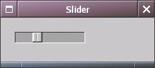

| LAST: Programming Details 3 | Contents |
This section lists the prototypes of all the WINGs and a few libwraster functions, some of them with a coding example.
void WMDestroyWidget (WMWidget *widget)
void WMMapWidget (WMWidget *w)
void WMMoveWidget (WMWidget *w, int x, int y)
void WMRealizeWidget (WMWidget *w)
void WMRedisplayWidget (WMWidget *w)
void WMResizeWidget (WMWidget *w, unsigned int width, unsigned int height)
void WMSetWidgetBackgroundColor (WMWidget *w, WMColor *color)
void WMUnmapWidget (WMWidget *w)
void WMUnmapSubwidgets (WMWidget *w)
unsigned int WMWidgetHeight (WMWidget *w)
unsigned int WMWidgetWidth (WMWidget *w)
Bool WMWidgetIsMapped (WMWidget *w)
WMWidget * WMWidgetOfView (WMView *view)
WMScreen * WMWidgetScreen (WMWidget *w)
void WMLowerWidget (WMWidget *w)
void WMRaiseWidget (WMWidget *w)
void WMReparentWidget (WMWidget *w, WMWidget *newParent, int x, int y)
void WMSetFocusToWidget (WMWidget *widget)
void WMSetWidgetDefaultBoldFont (WMScreen *scr, WMFont *font)
void WMSetWidgetDefaultFont (WMScreen *scr, WMFont *font)
Window WMWidgetXID (WMWidget *w)
WMColor * WMGetWidgetBackgroundColor (WMWidget *w)
WMFrame * WMCreateFrame (WMWidget *parent)
void WMSetFrameTitle (WMFrame *fPtr, char *title)
void WMSetFrameTitlePosition (WMFrame *fPtr,
WMTitlePosition position)
void WMSetFrameRelief (WMFrame *fPtr,
WMReliefType relief)
WMWindow * WMCreatePanelForWindow (WMWindow *owner, char *name)
WMWindow * WMCreatePanelWithStyleForWindow (WMWindow *owner, char *name, int style)
WMGenericPanel * WMCreateGenericPanel (WMScreen *scrPtr, WMWindow *owner, char *title, char *defaultButton, char *alternateButton)
void WMDestroyGenericPanel (WMGenericPanel *panel)
void WMChangePanelOwner (WMWindow *win, WMWindow *newOwner)
WMWindow * WMCreateWindow (WMScreen *screen, char *name)
WMWindow * WMCreateWindowWithStyle (WMScreen *screen, char *name, int style)
void WMCloseWindow (WMWindow *win)
void WMSetWindowCloseAction (WMWindow *win, WMAction *action, void *clientData)
void WMSetWindowAspectRatio (WMWindow *win, int minX, int minY, int maxX, int maxY)
void WMSetWindowBaseSize (WMWindow *win, unsigned width, unsigned height)
void WMSetWindowUserPosition (WMWindow *win, int x, int y)
void WMSetWindowInitialPosition (WMWindow *win, int x, int y)
void WMSetWindowMaxSize (WMWindow *win, unsigned width, unsigned height)
void WMSetWindowMinSize (WMWindow *win, unsigned width, unsigned height)
void WMSetWindowMiniwindowPixmap (WMWindow *win, WMPixmap *pixmap)
void WMSetWindowMiniwindowTitle (WMWindow *win, char *title)
void WMSetWindowLevel (WMWindow *win, int level)
void WMSetWindowResizeIncrements (WMWindow *win, unsigned wIncr, unsigned hIncr)
void WMSetWindowTitle (WMWindow *win, char *title)
void WMSetWindowDocumentEdited (WMWindow *win, Bool flag)
WMPoint WMGetViewPosition (WMView *view)
WMPoint WMGetViewScreenPosition (WMView *view)
WMSize WMGetViewSize (WMView *view)
void WMSetViewExpandsToParent (WMView *view, int leftOffs, int topOffs, int rightOffs, int bottomOffs)
void WMSetViewNotifySizeChanges (WMView *view, Bool flag)
void WMSetViewDragDestinationProcs (WMView *view, WMDragDestinationProcs *procs)
void WMSetViewDragSourceProcs (WMView *view, WMDragSourceProcs *procs)
void WMSetViewNextResponder (WMView *view, WMView *responder) Window WMViewXID (WMView *view)
WMButton * WMCreateButton (WMWidget *parent, WMButtonType type)
WMButton * WMCreateCustomButton (WMWidget *parent, int behaviourMask)
void WMGroupButtons (WMButton *bPtr, WMButton *newMember)
void WMSetButtonAction (WMButton *bPtr, WMAction *action, void *clientData)
void WMSetButtonImage (WMButton *bPtr, WMPixmap *image)
void WMSetButtonImageDefault (WMButton *bPtr)
void WMSetButtonImageDimsWhenDisabled (WMButton *bPtr, Bool flag)
void WMSetButtonImagePosition (WMButton *bPtr, WMImagePosition position)
void WMSetButtonText (WMButton *bPtr, char *text)
void WMSetButtonTextAlignment (WMButton *bPtr, WMAlignment alignment)
void WMSetButtonTextColor (WMButton *bPtr, WMColor *color)
void WMSetButtonAltImage (WMButton *bPtr, WMPixmap *image)
void WMSetButtonAltText (WMButton *bPtr, char *text)
void WMSetButtonAltTextColor (WMButton *bPtr, WMColor *color)
void WMSetButtonBordered (WMButton *bPtr, int isBordered)
void WMSetButtonContinuous (WMButton *bPtr, Bool flag)
void WMSetButtonDisabledTextColor (WMButton *bPtr, WMColor *color)
void WMSetButtonFont (WMButton *bPtr, WMFont *font)
void WMSetButtonPeriodicDelay (WMButton *bPtr, float delay, float interval)
void WMSetButtonEnabled (WMButton *bPtr, Bool flag)
void WMSetButtonSelected (WMButton *bPtr, int isSelected)
void WMSetButtonTag (WMButton *bPtr, int tag)
void WMPerformButtonClick (WMButton *bPtr)
int WMGetButtonEnabled (WMButton *bPtr)
int WMGetButtonSelected (WMButton *bPtr)
WMButtonType: WBTMomentaryPush, WBTMomentaryChange,WBTMomentaryLight WBTPushOnPushOff, WBTOnOff, WBToggle, WBTSwitch, WBTRadio
WMBox * WMCreateBox (WMWidget *parent)
void WMSetBoxBorderWidth (WMBox *box, unsigned width)
void WMSetBoxHorizontal (WMBox *box, Bool flag)
void WMAddBoxSubview (WMBox *bPtr, WMView *view, Bool expand, Bool fill, int minSize, int maxSize, int space)
void WMRemoveBoxSubview (WMBox *bPtr, WMView *view)
void WMAddBoxSubviewAtEnd (WMBox *bPtr, WMView *view, Bool expand, Bool fill, int minSize, int maxSize, int space)
WMSetPopUpButtonPullsDown function with boolean true to make it pull down like a menu. When false, the list will shift, and the current item will be under the mouse pointer.WMAction has been described above. To make the list, you create the first Button, and just use WMAddPopUpButtonItem for the next ones. The numbering starts at 0. You do not need to keep pointers to your labels, as there are functions to get the item number, and,with the item number, the label. The action called is the same for the whole menu list.
WMPopUpButton * WMCreatePopUpButton (WMWidget *parent)
WMMenuItem * WMAddPopUpButtonItem (WMPopUpButton *bPtr, char *title)
WMMenuItem * WMInsertPopUpButtonItem (WMPopUpButton *bPtr, int index, char *title)
void WMRemovePopUpButtonItem (WMPopUpButton *bPtr, int index)
void WMSetPopUpButtonAction (WMPopUpButton *bPtr, WMAction *action, void *clientData)
void WMSetPopUpButtonPullsDown (WMPopUpButton *bPtr, Bool flag)
void WMSetPopUpButtonText (WMPopUpButton *bPtr, char *text)
Bool WMGetPopUpButtonEnabled (WMPopUpButton *bPtr)
char * WMGetPopUpButtonItem (WMPopUpButton *bPtr, int index)
Bool WMGetPopUpButtonItemEnabled (WMPopUpButton *bPtr, int index)
WMMenuItem * WMGetPopUpButtonMenuItem (WMPopUpButton *bPtr, int index)
int WMGetPopUpButtonNumberOfItems (WMPopUpButton *bPtr)
int WMGetPopUpButtonSelectedItem (WMPopUpButton *bPtr)
void WMSetPopUpButtonEnabled (WMPopUpButton *bPtr, Bool flag)
void WMSetPopUpButtonItemEnabled (WMPopUpButton *bPtr, int index, Bool flag)
void WMSetPopUpButtonSelectedItem (WMPopUpButton *bPtr, int index)
WMTextField * WMCreateTextField (WMWidget *parent)
void WMDeleteTextFieldRange (WMTextField *tPtr, WMRange range)
void WMSetTextFieldSecure (WMTextField *tPtr, Bool flag)
void WMSetTextFieldText (WMTextField *tPtr, char *text)
char * WMGetTextFieldText (WMTextField *tPtr)
void WMSetTextFieldBordered (WMTextField *tPtr, Bool bordered)
void WMInsertTextFieldText (WMTextField *tPtr, char *text, int position)
void WMSelectTextFieldRange (WMTextField *tPtr, WMRange range)
void WMSetTextFieldAlignment (WMTextField *tPtr, WMAlignment alignment)
void WMSetTextFieldBeveled (WMTextField *tPtr, Bool flag)
void WMSetTextFieldCursorPosition (WMTextField *tPtr, unsigned int position)
void WMSetTextFieldEditable (WMTextField *tPtr, Bool flag)
Bool WMGetTextFieldEditable (WMTextField *tPtr)
void WMSetTextFieldFont (WMTextField *tPtr, WMFont *font)
WMFont * WMGetTextFieldFont (WMTextField *tPtr)
void WMSetTextFieldNextTextField (WMTextField *tPtr, WMTextField *next)
void WMSetTextFieldPrevTextField (WMTextField *tPtr, WMTextField *prev)
WMTextFieldDelegate * WMGetTextFieldDelegate (WMTextField *tPtr)
void WMSetTextFieldDelegate (WMTextField *tPtr, WMTextFieldDelegate *delegate)
WMLabel * WMCreateLabel (WMWidget *parent)
void WMSetLabelRelief (WMLabel *lPtr, WMReliefType relief)
void WMSetLabelText (WMLabel *lPtr, char *text)
void WMSetLabelTextAlignment (WMLabel *lPtr, WMAlignment alignment)
void WMSetLabelTextColor (WMLabel *lPtr, WMColor *color)
void WMSetLabelWraps (WMLabel *lPtr, Bool flag)
void WMSetLabelFont (WMLabel *lPtr, WMFont *font)
void WMSetLabelImage (WMLabel *lPtr, WMPixmap *image)
void WMSetLabelImagePosition (WMLabel *lPtr, WMImagePosition position)
int WMWidthOfString (WMFont *font, char *text,
int length)
int W_GetTextHeight (WMFont *font, char *text, int width,
int wrap)
WMFont * WMGetLabelFont (WMLabel *lPtr)
WMPixmap * WMGetLabelImage (WMLabel *lPtr)
char * WMGetLabelText (WMLabel *lPtr)
char * WMGetTabViewItemLabel (WMTabViewItem *item)

The slider's orientation is set byWMResizeWidgeting it. A continuous slider will pass all the values along the way when it is being changed.
WMSlider * WMCreateSlider (WMWidget *parent)
int WMGetSlider[Max|Min[]Value (WMSlider *slider)
void WMSetSliderAction (WMSlider *slider,
WMAction *action, void *data)
void WMSetSliderContinuous (WMSlider *slider, Bool flag)
void WMSetSlider[Max|Min|]Value (WMSlider *slider, int value)
void WMSetSliderKnobThickness (WMSlider *sPtr,
int thickness)
void WMSetSliderImage (WMSlider *sPtr, WMPixmap *pixmap)
WMScrollView * WMCreateScrollView (WMWidget *parent)
void WMSetScrollViewContentView (WMScrollView *sPtr, WMView *view)
void WMSetScrollViewHasHorizontalScroller (WMScrollView *sPtr, Bool flag)
void WMSetScrollViewHasVerticalScroller (WMScrollView *sPtr, Bool flag)
void WMSetScrollViewLineScroll (WMScrollView *sPtr, int amount)
void WMSetScrollViewPageScroll (WMScrollView *sPtr, int amount)
void WMSetScrollViewRelief (WMScrollView *sPtr, WMReliefType type)
void WMResizeScrollViewContent (WMScrollView *sPtr, unsigned int width, unsigned int height)
void WMScrollViewScrollPoint (WMScrollView *sPtr, WMPoint point)
WMScroller * WMGetScrollViewHorizontalScroller (WMScrollView *sPtr)
WMScroller * WMGetScrollViewVerticalScroller (WMScrollView *sPtr)
WMRect WMGetScrollViewVisibleRect (WMScrollView *sPtr)
A message pop-up window is shown by calling:
int WMRunAlertPanel (WMScreen *scrPtr, WMWindow *owner, char *messagetophalf, char *messagebottomhalf, char *defaultButton, char *alternateButton, char *otherButton)
The first argument should be the widget's screen, the second the window we are working in. The last three are labels for three buttons. The default button will return WAPRDefault (0) from the function, if clicked, and is the option selected if the user presses 'enter'. The middle and left button return 1 and -1. Only those buttons are shown whose labels are not NULL.
WMAlertPanel * WMCreateAlertPanel (WMScreen *scrPtr, WMWindow *owner, char *title, char *msg, char *defaultButton, char *alternateButton, char *otherButton)
void WMDestroyAlertPanel (WMAlertPanel *panel)
char * WMRunInputPanel (WMScreen *screen, WMWindow *owner, char *dialogtitle, char *message,char *defaultText, char *okButtontext, char *cancelButtontext). Cancel returns a null pointer. The defaultText is presented in the text field in the pop-up, and can be changed by the user.
void WMDestroyInputPanel (WMInputPanel *panel)
WMInputPanel * WMCreateInputPanel (WMScreen *scrPtr, WMWindow *owner, char *title, char *msg, char *defaultText, char *okButton, char *cancelButton)
WMOpenPanel * WMGetOpenPanel (WMScreen *screen)
int WMRunModalFilePanelForDirectory (WMFilePanel *panel, WMWindow *owner,char *initialpath,char *title, char **fileTypes)
char * WMGetFilePanelFileName (WMFilePanel *panel)
WMSavePanel * WMGetSavePanel (WMScreen *screen)
void WMSetFilePanelAccessoryView (WMFilePanel *panel, WMView *view)
void WMSetFilePanelAutoCompletion (WMFilePanel *panel, Bool flag)
void WMSetFilePanelCanChooseDirectories (WMFilePanel *panel, Bool flag)
void WMSetFilePanelCanChooseFiles (WMFilePanel *panel, Bool flag)
void WMSetFilePanelDirectory (WMFilePanel *panel, char *path) WMView * WMGetFilePanelAccessoryView (WMFilePanel *panel)
void WMFreeFilePanel (WMFilePanel *panel)
To open files there is a struct WMOpenPanel, to close them WMSavePanel. As for the WMView, we take the nature of the Panel as given for now. We just open a pointer to one on the screen we have opened. To open files, the WMOpenPanel pointer is passed to the function WMRunModalFilePanelForDirectory, which makes the file selector pop up. The owner can be set to NULL. initialpath is a string containing the starting directory name. The title is the dialog's title. The dialog has cancel and OK buttons, which make the function return False and True respectively. If True, the selected file name can be retrieved with WMGetFilePanelFileName (WMFilePanel *panel). To save files, exactly the same functions are used, with the only difference that you pass a pointer to a WMSavePanel.
WMText *WMCreateText(WMWidget *parent)
WMText * WMCreateTextForDocumentType (WMWidget *parent, WMAction *parser, WMAction *writer)
void WMAppendTextBlock (WMText *tPtr, void *vtb)
void WMAppendTextStream (WMText *tPtr, char *text)
void WMFreezeText (WMText *tPtr)
void WMThawText (WMText *tPtr)
char * WMGetTextStream (WMText *tPtr)
void WMPrependTextBlock (WMText *tPtr, void *vtb)
void WMPrependTextStream (WMText *tPtr, char *text)
void * WMRemoveTextBlock (WMText *tPtr)
Bool WMReplaceTextSelection (WMText *tPtr, char *replacement)
Bool WMScrollText (WMText *tPtr, int amount)
void WMShowTextRuler (WMText *tPtr, Bool show)
Bool WMFindInTextStream (WMText *tPtr, char *needle, Bool direction, Bool caseSensitive)
Bool WMPageText (WMText *tPtr, Bool direction)
void WMSetTextHasHorizontalScroller (WMText *tPtr, Bool shouldhave)
void WMSetTextHasRuler (WMText *tPtr, Bool shouldhave)
void WMSetTextHasVerticalScroller (WMText *tPtr, Bool shouldhave)
void WMSetTextAlignment (WMText *tPtr, WMAlignment alignment)
void WMSetTextBackgroundColor (WMText *tPtr, WMColor *color)
void WMSetTextBackgroundPixmap (WMText *tPtr, WMPixmap *pixmap)
void WMSetTextBlockProperties (WMText *tPtr, void *vtb, unsigned int first, unsigned int kanji, unsigned int underlined, int script, WMRulerMargins *margins)
void WMSetTextDefaultColor (WMText *tPtr, WMColor *color)
void WMSetTextDefaultFont (WMText *tPtr, WMFont *font)
void WMSetTextDelegate (WMText *tPtr, WMTextDelegate *delegate)
void WMSetTextEditable (WMText *tPtr, Bool editable)
void WMSetTextForegroundColor (WMText *tPtr, WMColor *color)
void WMSetTextIgnoresNewline (WMText *tPtr, Bool ignore)
void WMSetTextIndentNewLines (WMText *tPtr, Bool indent)
void WMSetTextRelief (WMText *tPtr, WMReliefType relief)
void WMSetTextSelectionColor (WMText *tPtr, WMColor *color)
void WMSetTextSelectionFont (WMText *tPtr, WMFont *font)
void WMSetTextSelectionUnderlined (WMText *tPtr, int underlined)
void WMSetTextUsesMonoFont (WMText *tPtr, Bool mono)
WMColor * WMGetTextDefaultColor (WMText *tPtr)
WMFont * WMGetTextDefaultFont (WMText *tPtr)
int WMGetTextEditable (WMText *tPtr)
Bool WMGetTextIgnoresNewline (WMText *tPtr)
int WMGetTextInsertType (WMText *tPtr)
WMArray * WMGetTextObjects (WMText *tPtr)
Bool WMGetTextRulerShown (WMText *tPtr)
WMArray * WMGetTextSelectedObjects (WMText *tPtr)
char * WMGetTextSelectedStream (WMText *tPtr)
WMColor * WMGetTextSelectionColor (WMText *tPtr)
WMFont * WMGetTextSelectionFont (WMText *tPtr)
int WMGetTextSelectionUnderlined (WMText *tPtr)
Bool WMGetTextUsesMonoFont (WMText *tPtr)
void * WMCreateTextBlockWithObject (WMText *tPtr, WMWidget *w, char *description, WMColor *color, unsigned short first, unsigned short extraInfo)
void * WMCreateTextBlockWithPixmap (WMText *tPtr, WMPixmap *p, char *description, WMColor *color, unsigned short first, unsigned short extraInfo)
void * WMCreateTextBlockWithText (WMText *tPtr, char *text, WMFont *font, WMColor *color, unsigned short first, unsigned short len)
void WMDestroyTextBlock (WMText *tPtr, void *vtb)
void WMGetTextBlockProperties (WMText *tPtr, void *vtb, unsigned int *first, unsigned int *kanji, unsigned int *underlined, int *script, WMRulerMargins *margins)
WMSplitView * WMCreateSplitView (WMWidget *parent)
void WMAddSplitViewSubview (WMSplitView *sPtr, WMView *subview)
void WMAdjustSplitViewSubviews (WMSplitView *sPtr)
void WMRemoveSplitViewSubview (WMSplitView *sPtr, WMView *view)
void WMRemoveSplitViewSubviewAt (WMSplitView *sPtr, int index)
void WMSetSplitViewConstrainProc (WMSplitView *sPtr, WMSplitViewConstrainProc *proc)
void WMSetSplitViewVertical (WMSplitView *sPtr, Bool flag)
int WMGetSplitViewDividerThickness (WMSplitView *sPtr)
WMView * WMGetSplitViewSubviewAt (WMSplitView *sPtr, int index)
int WMGetSplitViewSubviewsCount (WMSplitView *sPtr)
Bool WMGetSplitViewVertical (WMSplitView *sPtr)
WMListItem has a member .text, which contains the string added to the list with WMAddListItem. When making a (multiple) selection in the view, the items are added in a WMArray in the order they have been clicked. The WMArray is a dynamic array with functions to retrieve its elements, or the number of elements. WMList provides a WMListSelectionDidChangeNotification event. Sample code using WMAddNotificationObserver to add a function which handles all the selection events:
/* global*/
static void listSelectionObserver(void *observer, WMNotification *notification){
WMList *lPtr = (WMList*)WMGetNotificationObject(notification);
WMListItem *item;
int i;
item = WMGetFromArray(WMGetListSelectedItems(lPtr),0); /* 1st selected item */
i= WMGetArrayItemCount(WMGetListSelectedItems(lPtr))); /* number of items */
/* do something */
}
/* in main : */
WMList *list;
int i;
char text[100];
list = WMCreateList(window);
WMSetListAllowMultipleSelection(list, True);
for (i=0; i<20; i++) {
sprintf(text, "20 times same item");
WMAddListItem(list, text);
}
WMAddNotificationObserver(listSelectionObserver, NULL/*(observer)*/,
WMListSelectionDidChangeNotification, list);
WMMapSubwidgets(window);
}
WMSetList[Double]Action specifies a WMAction to do, when a list item is [double]clicked, e.g.
static void doubleClick(WMWidget *self, void *data){
WMSelectAllListItems((WMList*)self);
}Functions:
WMList * WMCreateList (WMWidget *parent)
void WMClearList (WMList *lPtr)
WMListItem * WMInsertListItem (WMList *lPtr, int row, char *text)
void WMSelectAllListItems (WMList *lPtr)
void WMSelectListItem (WMList *lPtr, int row)
void WMSelectListItemsInRange (WMList *lPtr, WMRange range)
void WMRemoveListItem (WMList *lPtr, int row)
void WMSortListItems (WMList *lPtr)
void WMSortListItemsWithComparer (WMList *lPtr, WMCompareDataProc *func)
WMListItem * WMGetListItem (WMList *lPtr, int row)
int WMGetListItemHeight (WMList *lPtr)
WMArray * WMGetListItems (WMList *lPtr)
int WMGetListNumberOfRows (WMList *lPtr)
int WMGetListPosition (WMList *lPtr)
WMListItem * WMGetListSelectedItem (WMList *lPtr)
int WMGetListSelectedItemRow (WMList *lPtr)
WMArray * WMGetListSelectedItems (WMList *lPtr)
int WMFindRowOfListItemWithTitle (WMList *lPtr, char *title)
Bool WMListAllowsEmptySelection (WMList *lPtr)
Bool WMListAllowsMultipleSelection (WMList *lPtr)
void WMSetListAction (WMList *lPtr, WMAction *action, void *clientData)
void WMSetListAllowEmptySelection (WMList *lPtr, Bool flag)
void WMSetListAllowMultipleSelection (WMList *lPtr, Bool flag)
void WMSetListBottomPosition (WMList *lPtr, int row)
void WMSetListDoubleAction (WMList *lPtr, WMAction *action, void *clientData)
void WMSetListPosition (WMList *lPtr, int row)
void WMSetListSelectionToRange (WMList *lPtr, WMRange range)
void WMSetListUserDrawItemHeight (WMList *lPtr, unsigned short height)
void WMSetListUserDrawProc (WMList *lPtr, WMListDrawProc *proc)
void WMUnselectAllListItems (WMList *lPtr)
void WMUnselectListItem (WMList *lPtr, int row)
WMPropList * WMCreatePropListFromDescription (char *desc)
WMPropList * WMDeepCopyPropList (WMPropList *plist)
char * WMGetPropListDescription (WMPropList *plist, Bool indented)
int WMGetPropListItemCount (WMPropList *plist)
Bool WMIsPropListEqualTo (WMPropList *plist, WMPropList *other)
WMPropList * WMReadPropListFromFile (char *file)
void WMReleasePropList (WMPropList *plist)
WMPropList * WMRetainPropList (WMPropList *plist)
WMPropList * WMShallowCopyPropList (WMPropList *plist)
Bool WMWritePropListToFile (WMPropList *plist, char *path, Bool atomically)
void WMPLSetCaseSensitive (Bool caseSensitiveness)
WMColorPanel * WMGetColorPanel (WMScreen *scrPtr)
void WMCloseColorPanel (WMColorPanel *panel)
void WMFreeColorPanel (WMColorPanel *panel)
WMColor * WMGetColorPanelColor (WMColorPanel *panel)
void WMSetColorPanelAction (WMColorPanel *panel, WMAction2 *action, void *data)
void WMSetColorPanelColor (WMColorPanel *panel, WMColor *color)
void WMSetColorPanelPickerMode (WMColorPanel *panel, WMColorPanelMode mode)
void WMShowColorPanel (WMColorPanel *panel)
WMFontPanel * WMGetFontPanel (WMScreen *scr)
WMFont * WMGetFontPanelFont (WMFontPanel *panel)
char * WMGetFontPanelFontName (WMFontPanel *panel)
void WMHideFontPanel (WMFontPanel *panel)
void WMSetFontPanelAction (WMFontPanel *panel, WMAction2 *action, void *data)
void WMSetFontPanelFont (WMFontPanel *panel, WMFont *font)
Bool WMSetFontPanelFontName (WMFontPanel *panel, char *fontName)
void WMShowFontPanel (WMFontPanel *panel)
void WMFreeFontPanel (WMFontPanel *panel)
The label on the tab itself should not be empty, or the tab won't be clickable. The view in the tab takes the view of the inserted widget. A frame expands to the tabbed view it is in. The widgets which go into the tabbed views should have the same parent as the whole TabView widget. Sample code for a TabView containing two tabs, the first with a frame, the second with a label:
/* WMWindow *window created */
int x,y, Width, Height;
WMFrame *frame;
WMLabel *label;
WMTabView *tabview;
WMTabViewItem *tab;
tabview = WMCreateTabView(window);
WMMoveWidget(tabview, x, y);
WMResizeWidget(tabview, Width, Height);
frame = WMCreateFrame(window);
tab = WMCreateTabViewItemWithIdentifier(0);
WMSetTabViewItemView(tab, WMWidgetView(frame));
WMAddItemInTabView(tabview, tab);
WMSetTabViewItemLabel(tab, "1");
label = WMCreateLabel(window);
WMSetLabelText(label, "Text in View");
WMMapWidget(label);
tab = WMCreateTabViewItemWithIdentifier(0);
WMSetTabViewItemView(tab, WMWidgetView(label));
WMAddItemInTabView(tabview, tab);
WMSetTabViewItemLabel(tab, "tab 2");
WMMapSubwidgets(window);
WMTabView * WMCreateTabView (WMWidget *parent)
WMTabViewItem * WMCreateTabViewItem (int identifier, char *label)
WMTabViewItem * WMCreateTabViewItemWithIdentifier (int identifier)
void WMDestroyTabViewItem (WMTabViewItem *item)
void WMAddItemInTabView (WMTabView *tPtr, WMTabViewItem *item)
WMTabViewItem * WMAddTabViewItemWithView (WMTabView *tPtr, WMView *view, int identifier, char *label)
void WMInsertItemInTabView (WMTabView *tPtr, int index, WMTabViewItem *item)
void WMRemoveTabViewItem (WMTabView *tPtr, WMTabViewItem *item)
void WMSetTabViewItemView (WMTabViewItem *item, WMView *view) WMTabViewItem * WMGetSelectedTabViewItem (WMTabView *tPtr)
int WMGetTabViewItemIdentifier (WMTabViewItem *item)
char * WMGetTabViewItemLabel (WMTabViewItem *item)
WMView * WMGetTabViewItemView (WMTabViewItem *item)
void WMSelectFirstTabViewItem (WMTabView *tPtr)
void WMSelectLastTabViewItem (WMTabView *tPtr)
void WMSelectNextTabViewItem (WMTabView *tPtr)
void WMSelectPreviousTabViewItem (WMTabView *tPtr)
void WMSelectTabViewItem (WMTabView *tPtr, WMTabViewItem *item)
void WMSelectTabViewItemAtIndex (WMTabView *tPtr, int index)
void WMSetTabViewDelegate (WMTabView *tPtr, WMTabViewDelegate *delegate)
void WMSetTabViewEnabled (WMTabView *tPtr, Bool flag)
void WMSetTabViewFont (WMTabView *tPtr, WMFont *font)
void WMSetTabViewItemEnabled (WMTabViewItem *tPtr, Bool flag)
void WMSetTabViewItemLabel (WMTabViewItem *item, char *label)
void WMSetTabViewType (WMTabView *tPtr, WMTabViewType type)
WMTabViewItem * WMTabViewItemAtPoint (WMTabView *tPtr, int x, int y)
WMProgressIndicator * WMCreateProgressIndicator (WMWidget *parent)
int WMGetProgressIndicatorMaxValue (WMProgressIndicator *progressindicator)
int WMGetProgressIndicatorMinValue (WMProgressIndicator *progressindicator)
int WMGetProgressIndicatorValue (WMProgressIndicator *progressindicator)
void WMSetProgressIndicatorMaxValue (WMProgressIndicator *progressindicator, int value)
void WMSetProgressIndicatorMinValue (WMProgressIndicator *progressindicator, int value)
void WMSetProgressIndicatorValue (WMProgressIndicator *progressindicator, int value)
void WMCreateEventHandler (WMView *view, unsigned long mask, WMEventProc *eventProc, void *clientData)
void WMDeleteEventHandler (WMView *view, unsigned long mask, WMEventProc *eventProc, void *clientData)
int WMHandleEvent (XEvent *event)
WMEventHook * WMHookEventHandler (WMEventHook *handler)
void WMMaskEvent (Display *dpy, long mask, XEvent *event)
void WMNextEvent (Display *dpy, XEvent *event)
int XPending(Display *display)
Bool WMCreateSelectionHandler (WMView *view, Atom selection, Time timestamp, WMSelectionProcs *procs, void *cdata)
void WMDeleteSelectionCallback (WMView *view, Atom selection, Time timestamp)
void WMDeleteSelectionHandler (WMView *view, Atom selection, Time timestamp)
Bool WMRequestSelection (WMView *view, Atom selection, Atom target, Time timestamp, WMSelectionCallback *callback, void *cdata)
WMScreen * WMCreateScreen (Display *display, int screen)
WMScreen * WMCreateScreenWithRContext (Display *display, int screen, RContext *context)
WMScreen * WMCreateSimpleApplicationScreen (Display *display)
WMScreen * WMOpenScreen (const char *display)
WMPoint WMGetViewScreenPosition (WMView *view)
int WMScreenDepth (WMScreen *scr)
Display * WMScreenDisplay (WMScreen *scr)
unsigned int WMScreenHeight (WMScreen *scr)
RContext * WMScreenRContext (WMScreen *scr)
unsigned int WMScreenWidth (WMScreen *scr)
void WMScreenMainLoop (WMScreen *scr)
Bool WMScreenPending (WMScreen *scr)
RImage * WMGetApplicationIconImage (WMScreen *scr)
WMColor * WMWhiteColor (WMScreen *scr)
WMColor * WMCreateNamedColor (WMScreen *scr, char *name,
Bool exact)
RImage * RCreateImageFromXImage (RContext *context,
XImage *image,
XImage *mask)
RImage * RCreateImage (unsigned width, unsigned height,
int alpha)
RImage * RGetImageFromXPMData (RContext *context,
char **data)
RImage * RLoadXPM (RContext *context, char *file,
int index)
RContext * RCreateContext (Display *dpy,
int screen_number,
RContextAttributes *attribs)
RContext * WMScreenRContext (WMScreen *scr)
WMPixmap * WMCreateBlendedPixmapFromFile (WMScreen *scrPtr, char *fileName, RColor *color)
WMPixmap * WMCreateBlendedPixmapFromRImage (WMScreen *scrPtr, RImage *image, RColor *color)
WMPixmap * WMCreatePixmap (WMScreen *scrPtr, int width, int height, int depth, Bool masked)
WMPixmap * WMCreatePixmapFromFile (WMScreen *scrPtr, char *fileName)
WMPixmap * WMCreatePixmapFromRImage (WMScreen *scrPtr, RImage *image, int threshold)
WMPixmap * WMCreatePixmapFromXPMData (WMScreen *scrPtr, char **data)
WMPixmap * WMCreatePixmapFromXPixmaps (WMScreen *scrPtr, Pixmap pixmap, Pixmap mask, int width, int height, int depth)
void WMDrawPixmap (WMPixmap *pixmap, Drawable d, int x, int y)
Pixmap WMGetPixmapMaskXID (WMPixmap *pixmap)
WMSize WMGetPixmapSize (WMPixmap *pixmap)
Pixmap WMGetPixmapXID (WMPixmap *pixmap)
WMPixmap * WMGetSystemPixmap (WMScreen *scr, int image)
void WMReleasePixmap (WMPixmap *pixmap)
WMPixmap * WMRetainPixmap (WMPixmap *pixmap)
Application wide functions
void WMInitializeApplication (char *applicationName, int *argc, char **argv)
char * WMGetApplicationName ()
void WMSetApplicationHasAppIcon (WMScreen *scr, Bool flag)
void WMSetApplicationIconImage (WMScreen *scr, RImage *image)
void WMSetApplicationIconPixmap (WMScreen *scr, WMPixmap *icon)
void WMSetApplicationIconWindow (WMScreen *scr, Window window)
WMPixmap * WMCreateApplicationIconBlendedPixmap (WMScreen *scr, RColor *color)
RImage * WMGetApplicationIconImage (WMScreen *scr)
WMPixmap * WMGetApplicationIconPixmap (WMScreen *scr)
Notifications
A typical sequence to have a window handle messages which come from some widget, is:
(global)
const char *WMRequestName="AnyName";
At the point (in some widget function) where another window (widget) should act on the notification, put:
WMPostNotificationName(WMRequestName, self, NULL);
This call will put the notification in a queue.
In the WMNotificationObserverAction(void *self,WMNotification notif), with name "notificationHandler", put
if(!strcmp(WMRequestName,WMGetNotificationName(notif))){do something}
This will do something if the incoming notification is one with the right name. To put it to work by a widget "window", do:
WMAddNotificationObserver(notificationHandler, window, WMRequestName, object)
Arguments "window" and "object", and also the notification name, can be NULL.
The last argument (object) to the WMAddNotificationObserver function selects an object where the notification is allowed to come from. To handle all incoming notifications with the right name, set this to NULL
void WMAddNotificationObserver (WMNotificationObserverAction *observerAction, void *observer, const char *name, void *object)
WMNotification * WMCreateNotification (const char *name, void *object, void *clientData)
WMNotificationQueue * WMCreateNotificationQueue (void )
void WMPostNotification (WMNotification *notification)
void WMPostNotificationName (const char *name, void *object, void *clientData)
void * WMGetNotificationClientData (WMNotification *notification)
const char * WMGetNotificationName (WMNotification *notification)
void * WMGetNotificationObject (WMNotification *notification)
void WMEnqueueNotification (WMNotificationQueue *queue, WMNotification *notification, WMPostingStyle postingStyle)
void WMDequeueNotificationMatching (WMNotificationQueue *queue, WMNotification *notification, unsigned mask)
void WMEnqueueCoalesceNotification (WMNotificationQueue *queue, WMNotification *notification, WMPostingStyle postingStyle, unsigned coalesceMask)
WMNotificationQueue * WMGetDefaultNotificationQueue (void )
void WMReleaseNotification (WMNotification *notification)
void WMRemoveNotificationObserver (void *observer)
void WMRemoveNotificationObserverWithName (void *observer, const char *name, void *object)
WMNotification * WMRetainNotification (WMNotification *notification)
void WMSetViewNotifySizeChanges (WMView *view, Bool flag)
Text balloons
void WMSetBalloonEnabled (WMScreen *scr, Bool flag)
void WMSetBalloonDelay (WMScreen *scr, int delay)
void WMSetBalloonFont (WMScreen *scr, WMFont *font)
void WMSetBalloonTextAlignment (WMScreen *scr, WMAlignment alignment)
void WMSetBalloonTextColor (WMScreen *scr, WMColor *color)
void WMSetBalloonTextForView (char *text, WMView *view)
W_Balloon * W_CreateBalloon (WMScreen *scr)
void W_BalloonHandle[Enter|Leave]View (WMView *view)
Drag/drop functions
void WMDragImageFromView (WMView *view, WMPixmap *image, char *dataTypes, WMPoint atLocation, WMSize mouseOffset, XEvent *event, Bool slideBack)
WMPoint WMGetDraggingInfoImageLocation (WMDraggingInfo *info)
void WMRegisterViewForDraggedTypes (WMView *view, char *acceptedTypes)
void WMSetViewDragDestinationProcs (WMView *view, WMDragDestinationProcs *procs)
void WMSetViewDragSourceProcs (WMView *view, WMDragSourceProcs *procs)
void WMUnregisterViewDraggedTypes (WMView *view)
Bool WMRequestDroppedData (WMView *view, WMDraggingInfo *info, char *type, WMDropDataCallback *callback)
Network connection
WMConnection * WMCreateConnectionAsServerAtAddress (char *host, char *service, char *protocol)
WMConnection * WMCreateConnectionToAddress (char *host, char *service, char *protocol)
WMConnection * WMCreateConnectionToAddressAndNotify (char *host, char *service, char *protocol)
WMConnection * WMAcceptConnection (WMConnection *listener)
void WMCloseConnection (WMConnection *cPtr)
void WMDestroyConnection (WMConnection *cPtr)
void WMSetConnectionClientData (WMConnection *cPtr, void *data)
Bool WMSetConnectionCloseOnExec (WMConnection *cPtr, Bool flag)
void WMSetConnectionDefaultTimeout (unsigned int timeout)
void WMSetConnectionDelegate (WMConnection *cPtr, ConnectionDelegate *delegate)
void WMSetConnectionFlags (WMConnection *cPtr, unsigned int flags)
Bool WMSetConnectionNonBlocking (WMConnection *cPtr, Bool flag)
void WMSetConnectionOpenTimeout (unsigned int timeout)
void WMSetConnectionSendTimeout (WMConnection *cPtr, unsigned int timeout)
void WMSetConnectionShutdownOnClose (WMConnection *cPtr, Bool flag)
Bool WMEnqueueConnectionData (WMConnection *cPtr, WMData *data)
char * WMGetConnectionAddress (WMConnection *cPtr)
WMData * WMGetConnectionAvailableData (WMConnection *cPtr)
void * WMGetConnectionClientData (WMConnection *cPtr)
unsigned int WMGetConnectionFlags (WMConnection *cPtr)
char * WMGetConnectionProtocol (WMConnection *cPtr)
char * WMGetConnectionService (WMConnection *cPtr)
int WMGetConnectionSocket (WMConnection *cPtr)
WMConnectionState WMGetConnectionState (WMConnection *cPtr)
WMConnectionTimeoutState WMGetConnectionTimeoutState (WMConnection *cPtr)
WMArray * WMGetConnectionUnsentData (WMConnection *cPtr)
int WMSendConnectionData (WMConnection *cPtr, WMData *data)
Draw functions
RContext * RCreateContext (Display *dpy, int screen_number, RContextAttributes *attribs)
GC WMColorGC (WMColor *color)
RImage * RCreateImage (unsigned width, unsigned height, int alpha)
RImage * RCreateImageFromDrawable (RContext *context, Drawable drawable, Pixmap mask)
RImage * RCreateImageFromXImage (RContext *context, XImage *image, XImage *mask)
RXImage * RCreateXImage (RContext *context, int depth, unsigned width, unsigned height)
void RDestroyXImage (RContext *context, RXImage *rximage)
void RBevelImage (RImage *image, int bevel_type)
int RBlurImage (RImage *image)
void RClearImage (RImage *image, RColor *color)
RImage * RCloneImage (RImage *image)
int RDrawLine (RImage *image, int x0, int y0, int x1, int y1, RColor *color)
void RDrawLines (RImage *image, RPoint *points, int npoints, int mode, RColor *color)
void RDrawSegments (RImage *image, RSegment *segs, int nsegs, RColor *color)
void RFillImage (RImage *image, RColor *color)
void RCombineArea (RImage *image, RImage *src, int sx, int sy, unsigned width, unsigned height, int dx, int dy)
void RCombineAreaWithOpaqueness (RImage *image, RImage *src, int sx, int sy, unsigned width, unsigned height, int dx, int dy, int opaqueness)
void RCombineImageWithColor (RImage *image, RColor *color)
void RCombineImages (RImage *image, RImage *src)
void RCombineImagesWithOpaqueness (RImage *image, RImage *src, int opaqueness)
int RConvertImage (RContext *context, RImage *image, Pixmap *pixmap)
int RConvertImageMask (RContext *context, RImage *image, Pixmap *pixmap, Pixmap *mask, int threshold)
Bool RGetClosestXColor (RContext *context, RColor *color, XColor *retColor)
char * RGetImageFileFormat (char *file)
RImage * RGetImageFromXPMData (RContext *context, char **data)
Bool RGetPixel (RImage *image, int x, int y, RColor *color)
RImage * RGetSubImage (RImage *image, int x, int y, unsigned width, unsigned height)
RXImage * RGetXImage (RContext *context, Drawable d, int x, int y, unsigned width, unsigned height)
void RHSVtoRGB (RHSVColor *hsv, RColor *rgb)
RImage * RLoadImage (RContext *context, char *file, int index)
RImage * RLoadPPM (RContext *context, char *file_name, int index)
RImage * RLoadXPM (RContext *context, char *file, int index)
RImage * RMakeCenteredImage (RImage *image, unsigned width, unsigned height, RColor *color)
RImage * RMakeTiledImage (RImage *tile, unsigned width, unsigned height)
const char * RMessageForError (int errorCode)
int ROperateLine (RImage *image, int operation, int x0, int y0, int x1, int y1, RColor *color)
void ROperateLines (RImage *image, int operation, RPoint *points, int npoints, int mode, RColor *color)
void ROperatePixel (RImage *image, int operation, int x, int y, RColor *color)
void ROperatePixels (RImage *image, int operation, RPoint *points, int npoints, int mode, RColor *color)
void ROperateSegments (RImage *image, int operation, RSegment *segs, int nsegs, RColor *color)
void RPutPixel (RImage *image, int x, int y, RColor *color)
void RPutPixels (RImage *image, RPoint *points, int npoints, int mode, RColor *color)
void RPutXImage (RContext *context, Drawable d, GC gc, RXImage *ximage, int src_x, int src_y, int dest_x, int dest_y, unsigned int width, unsigned int height)
void RRGBtoHSV (RColor *rgb, RHSVColor *hsv)
void RReleaseImage (RImage *image)
RImage * RRenderGradient (unsigned width, unsigned height, RColor *from, RColor *to, int style)
RImage * RRenderInterwovenGradient (unsigned width, unsigned height, RColor colors1, int thickness1, RColor colors2, int thickness2)
RImage * RRenderMultiGradient (unsigned width, unsigned height, RColor **colors, int style)
RImage * RRetainImage (RImage *image)
RImage * RRotateImage (RImage *image, float angle)
Bool RSaveImage (RImage *image, char *filename, char *format)
Bool RSaveXPM (RImage *image, char *filename)
RImage * RScaleImage (RImage *image, unsigned new_width, unsigned new_height)
RImage * RSmoothScaleImage (RImage *src, unsigned new_width, unsigned new_height)
char ** RSupportedFileFormats (void ) RColor ulongToRColor (WMScreen *scr, unsigned long value)
RColor WMGetRColorFromColor(WMColor *color)
RColor col = {0xae,0xaa,0xae,0xff}
Other used graphics functions which are not libWINGs/libwraster:
Status XmuCreateColormap (dpy , colormap )
void XmuDeleteStandardColormap (dpy , screen , property )
Status XmuGetColormapAllocation (vinfo , property , red_max , green_max , blue_max )
Status XmuLookupStandardColormap (dpy , screen , visualid , depth , property , replace , retain )
XStandardColormap * XmuStandardColormap (dpy , screen , visualid , depth , property , cmap , red_max , green_max , blue_max )
int XDrawRectangle(Display *display, Drawable d, GC gc,
int x, int y, unsigned int width, unsigned int
height)
int XDrawLines(Display *display, Drawable d, GC gc, XPoint
*points, int npoints, int mode)
int XDrawSegments(Display *display, Drawable d, GC gc,
XSegment *segments, int nsegments)
int XDrawArc(Display *display, Drawable d, GC gc, int x,
int y, unsigned int width, unsigned int height, int
angle1, int angle2)
int XDrawArcs(Display *display, Drawable d, GC gc, XArc
*arcs, int narcs)
int XDrawPoint(Display *display, Drawable d, GC gc, int x,
int y)
int XDrawPoints(Display *display, Drawable d, GC gc,
XPoint *points, int npoints, int mode)
GC XCreateGC(Display *display, Drawable d, unsigned long
valuemask, XGCValues *values)
int XFillArc(Display *display, Drawable d, GC gc, int x,
int y, unsigned int width, unsigned int height, int
angle1, int angle2)
int XFillPolygon(Display *display, Drawable d, GC gc,
XPoint *points, int npoints, int shape, int mode)
typedef struct {
short x1, y1, x2, y2;
} XSegment
typedef struct {
short x, y;
} XPoint
typedef struct {
short x, y;
unsigned short width, height;
short angle1, angle2; /* Degrees * 64 */
} XArc
Browser functions
WMBrowser * WMCreateBrowser (WMWidget *parent)
int WMAddBrowserColumn (WMBrowser *bPtr)
Bool WMBrowserAllowsEmptySelection (WMBrowser *bPtr)
Bool WMBrowserAllowsMultipleSelection (WMBrowser *bPtr)
void WMSetBrowserAction (WMBrowser *bPtr, WMAction *action, void *clientData)
void WMSetBrowserAllowEmptySelection (WMBrowser *bPtr, Bool flag)
void WMSetBrowserAllowMultipleSelection (WMBrowser *bPtr, Bool flag)
void WMSetBrowserColumnTitle (WMBrowser *bPtr, int column, char *title)
void WMSetBrowserDelegate (WMBrowser *bPtr, WMBrowserDelegate *delegate)
void WMSetBrowserDoubleAction (WMBrowser *bPtr, WMAction *action, void *clientData)
void WMSetBrowserHasScroller (WMBrowser *bPtr, int hasScroller)
void WMSetBrowserMaxVisibleColumns (WMBrowser *bPtr, int columns)
char * WMSetBrowserPath (WMBrowser *bPtr, char *path)
void WMSetBrowserPathSeparator (WMBrowser *bPtr, char *separator)
void WMSetBrowserTitled (WMBrowser *bPtr, Bool flag)
void WMSortBrowserColumn (WMBrowser *bPtr, int column)
void WMSortBrowserColumnWithComparer (WMBrowser *bPtr, int column, WMCompareDataProc *func)
int WMGetBrowserFirstVisibleColumn (WMBrowser *bPtr)
WMList * WMGetBrowserListInColumn (WMBrowser *bPtr, int column)
int WMGetBrowserMaxVisibleColumns (WMBrowser *bPtr)
int WMGetBrowserNumberOfColumns (WMBrowser *bPtr)
char * WMGetBrowserPath (WMBrowser *bPtr)
char * WMGetBrowserPathToColumn (WMBrowser *bPtr, int column)
WMArray * WMGetBrowserPaths (WMBrowser *bPtr)
int WMGetBrowserSelectedColumn (WMBrowser *bPtr)
WMListItem * WMGetBrowserSelectedItemInColumn (WMBrowser *bPtr, int column)
int WMGetBrowserSelectedRowInColumn (WMBrowser *bPtr, int column)
WMListItem * WMInsertBrowserItem (WMBrowser *bPtr, int column, int row, char *text, Bool isBranch)
void WMLoadBrowserColumnZero (WMBrowser *bPtr)
void WMRemoveBrowserItem (WMBrowser *bPtr, int column, int row)
Menu items
WMMenuItem * WMCreateMenuItem (void )
void WMDestroyMenuItem (WMMenuItem *item)
void WMSetMenuItemAction (WMMenuItem *item, WMAction *action, void *data)
void WMSetMenuItemEnabled (WMMenuItem *item, Bool flag)
void WMSetMenuItemMixedStatePixmap (WMMenuItem *item, WMPixmap *pixmap)
void WMSetMenuItemOffStatePixmap (WMMenuItem *item, WMPixmap *pixmap)
void WMSetMenuItemOnStatePixmap (WMMenuItem *item, WMPixmap *pixmap)
void WMSetMenuItemPixmap (WMMenuItem *item, WMPixmap *pixmap)
void WMSetMenuItemRepresentedObject (WMMenuItem *item, void *object)
void WMSetMenuItemShortcut (WMMenuItem *item, char *shortcut)
void WMSetMenuItemShortcutModifierMask (WMMenuItem *item, unsigned mask)
void WMSetMenuItemState (WMMenuItem *item, int state)
void WMSetMenuItemTitle (WMMenuItem *item, char *title)
Bool WMMenuItemIsSeparator (WMMenuItem *item)
WMAction * WMGetMenuItemAction (WMMenuItem *item)
void * WMGetMenuItemData (WMMenuItem *item)
Bool WMGetMenuItemEnabled (WMMenuItem *item)
WMPixmap * WMGetMenuItemMixedStatePixmap (WMMenuItem *item)
WMPixmap * WMGetMenuItemOffStatePixmap (WMMenuItem *item)
WMPixmap * WMGetMenuItemOnStatePixmap (WMMenuItem *item)
WMPixmap * WMGetMenuItemPixmap (WMMenuItem *item)
void * WMGetMenuItemRepresentedObject (WMMenuItem *item)
char * WMGetMenuItemShortcut (WMMenuItem *item)
unsigned WMGetMenuItemShortcutModifierMask (WMMenuItem *item)
int WMGetMenuItemState (WMMenuItem *item)
char * WMGetMenuItemTitle (WMMenuItem *item)
WMMenuItem * WMGetSeparatorMenuItem (void )
Utility/redefined functions
char * wdefaultspathfordomain (char *domain)
char * wexpandpath (char *path)
void wfatal (const char *msg, ... )
char * wfindfile (char *paths, char *file)
char * wfindfileinarray (WMPropList *array, char *file)
char * wfindfileinlist (char **path_list, char *file)
void wfree (void *ptr)
char * wgethomedir ()
void * wmalloc (size_t size)
void wmessage (const char *msg, ... )
WMPoint wmkpoint (int x, int y)
WMRange wmkrange (int start, int count)
WMSize wmksize (unsigned int width, unsigned int height)
void * wrealloc (void *ptr, size_t newsize)
void wrelease (void *ptr)
void * wretain (void *ptr)
waborthandler * wsetabort (waborthandler *handler)
char * wstrappend (char *dst, char *src)
char * wstrconcat (char *str1, char *str2)
char * wstrdup (char *str)
char * wstrerror (int errnum)
char * wstrndup (char *str, size_t len)
void wsyserror (const char *msg, ... )
void wsyserrorwithcode (int error, const char *msg, ... )
void wtokenfree (char **tokens, int count)
char * wtokenjoin (char **list, int count)
char * wtokennext (char *word, char **next)
void wtokensplit (char *command, char ***argv, int *argc)
char * wtrimspace (char *s)
char * wusergnusteppath ()
void wwarning (const char *msg, ... )
Other used functions:
int calculateCombineArea (RImage *des, RImage *src, int *sx, int *sy, int *swidth, int *sheight, int *dx, int *dy)
void convertCPColor (CPColor *color)
void destroyNode (void *data)
void drawClip ()
char * generateNewFilename (char *curName)
unsigned char getShift (unsigned char value)
char * getStream (WMText *tPtr, int sel, int array)
WMArray * getStreamObjects (WMText *tPtr, int sel)
Pixmap makeMenuPixmap (PopUpButton *bPtr)
Bool requestDroppedData (WMView *view, WMDraggingInfo *info, char *type)
WMData * requestHandler (WMView *view, Atom selection, Atom target, void *cdata, Atom *type)
RColor ulongToRColor (WMScreen *scr, unsigned long value)
Data types
WMColor
WMColor * WMCreateNamedColor (WMScreen *scr, char *name, Bool exact)
WMColor * WMCreateRGBAColor (WMScreen *scr, unsigned short red, unsigned short green, unsigned short blue, unsigned short alpha, Bool exact)
WMColor * WMCreateRGBColor (WMScreen *scr, unsigned short red, unsigned short green, unsigned short blue, Bool exact)
void WMReleaseColor (WMColor *color)
WMColor * WMRetainColor (WMColor *color)
char * WMGetColorRGBDescription (WMColor *color)
WMColor * WMBlackColor (WMScreen *scr)
WMColor * WMWhiteColor (WMScreen *scr)
WMColor * WMGrayColor (WMScreen *scr)
WMColor * WMDarkGrayColor (WMScreen *scr)
unsigned short WMBlueComponentOfColor (WMColor *color)
unsigned short WMRedComponentOfColor (WMColor *color)
unsigned short WMGreenComponentOfColor (WMColor *color)
void WMSetColorInGC (WMColor *color, GC gc)
WMPixel WMColorPixel (WMColor *color)
void WMSetColorAlpha (WMColor *color, unsigned short alpha)
unsigned short WMGetColorAlpha (WMColor *color)
void WMPaintColorSwatch (WMColor *color, Drawable d, int x, int y, unsigned int width, unsigned int height)
void WMSetColorWellColor (WMColorWell *cPtr, WMColor *color)
WMColorWell * WMCreateColorWell (WMWidget *parent)
WMColor * WMGetColorWellColor (WMColorWell *cPtr)
WMFont
WMFont * WMCreateFont (WMScreen *scrPtr, char *fontName)
WMFont * WMCreateFontSet (WMScreen *scrPtr, char *fontName)
WMFont * WMCreateFontWithFlags (WMScreen *scrPtr, char *fontName, WMFontFlags flags)
WMFont * WMCreateNormalFont (WMScreen *scrPtr, char *fontName)
WMFont * WMCreateAntialiasedFont (WMScreen *scrPtr, char *fontName)
WMFont * WMCreateAntialiasedFontSet (WMScreen *scrPtr, char *fontName)
WMFont * WMCopyFontWithChanges (WMScreen *scrPtr, WMFont *font, const WMFontAttributes *changes)
void WMReleaseFont (WMFont *font)
WMFont * WMRetainFont (WMFont *font)
WMFont * WMDefaultBoldSystemFont (WMScreen *scrPtr)
WMFont * WMDefaultSystemFont (WMScreen *scrPtr)
WMFont * WMSystemFontOfSize (WMScreen *scrPtr, int size)
WMFont * WMBoldSystemFontOfSize (WMScreen *scrPtr, int size)
unsigned int WMFontHeight (WMFont *font)
XFontSet WMGetFontFontSet (WMFont *font)
char * WMGetFontName (WMFont *font)
Bool WMIsAntialiasedFont (WMFont *font)
void WMSetWidgetDefaultBoldFont (WMScreen *scr, WMFont *font)
void WMSetWidgetDefaultFont (WMScreen *scr, WMFont *font)
WMArray
WMArray * WMCreateArray (int initialSize)
WMArray * WMCreateArrayWithArray (WMArray *array)
WMArray * WMCreateArrayWithDestructor (int initialSize, WMFreeDataProc *destructor)
void WMAddToArray (WMArray *array, void *item)
void WMAppendArray (WMArray *array, WMArray *other)
void * WMArrayFirst (WMArray *array, WMArrayIterator *iter)
void * WMArrayLast (WMArray *array, WMArrayIterator *iter)
void * WMArrayNext (WMArray *array, WMArrayIterator *iter)
void * WMArrayPrevious (WMArray *array, WMArrayIterator *iter)
int WMCountInArray (WMArray *array, void *item)
int WMDeleteFromArray (WMArray *array, int index)
void WMEmptyArray (WMArray *array)
int WMFindInArray (WMArray *array, WMMatchDataProc *match, void *cdata)
void WMFreeArray (WMArray *array)
int WMGetArrayItemCount (WMArray *array)
void * WMGetFromArray (WMArray *array, int index)
void WMInsertInArray (WMArray *array, int index, void *item)
void WMMapArray (WMArray *array, void (*function)(void *, void *), void *data)
void * WMPopFromArray (WMArray *array)
int WMRemoveFromArrayMatching (WMArray *array, WMMatchDataProc *match, void *cdata)
void * WMReplaceInArray (WMArray *array, int index, void *item)
void WMSortArray (WMArray *array, WMCompareDataProc *comparer)
WMPropList * WMCreatePLArray (WMPropList *elem, ... )
void WMAddToPLArray (WMPropList *plist, WMPropList *item)
void WMDeleteFromPLArray (WMPropList *plist, int index)
WMPropList * WMGetFromPLArray (WMPropList *plist, int index)
void WMInsertInPLArray (WMPropList *plist, int index, WMPropList *item)
Bool WMIsPLArray (WMPropList *plist)
void WMRemoveFromPLArray (WMPropList *plist, WMPropList *item)
WM_ITERATE_ARRAY(WMArray *,itemtype *,WMArrayIterator *iter)
Trees
WMTreeNode * WMCreateTreeNode (void *data)
WMTreeNode * WMCreateTreeNodeWithDestructor (void *data, WMFreeDataProc *destructor)
void WMDeleteLeafForTreeNode (WMTreeNode *aNode, int index)
void WMDestroyTreeNode (WMTreeNode *aNode)
void * WMGetDataForTreeNode (WMTreeNode *aNode)
void * WMReplaceDataForTreeNode (WMTreeNode *aNode, void *newData)
WMTreeNode * WMGetParentForTreeNode (WMTreeNode *aNode)
int WMGetTreeNodeDepth (WMTreeNode *aNode)
WMTreeNode * WMFindInTree (WMTreeNode *aTree, WMMatchDataProc *match, void *cdata)
WMTreeNode * WMInsertItemInTree (WMTreeNode *parent, int index, void *item)
WMTreeNode * WMInsertNodeInTree (WMTreeNode *parent, int index, WMTreeNode *aNode)
void WMRemoveLeafForTreeNode (WMTreeNode *aNode, void *leaf)
void WMSortLeavesForTreeNode (WMTreeNode *aNode, WMCompareDataProc *comparer)
void WMSortTree (WMTreeNode *aNode, WMCompareDataProc *comparer)
ENUMS and #defines
List of event masks and corresponding events
Event mask Event
KeyPressMask KeyPress KeyReleaseMask KeyRelease ButtonPressMask ButtonPress ButtonReleaseMask ButtonRelease EnterWindowMask EnterNotify LeaveWindowMask LeaveNotify FocusChangeMask FocusIn FocusChangeMask FocusOut KeymapStateMask KeymapNotify ExposureMask Expose ExposureMask GraphicsExpose ExposureMask NoExpose VisibilityChangeMask VisibilityNotify SubstructureNotifyMask CreateNotify StructureNotifyMask DestroyNotify StructureNotifyMask UnmapNotify StructureNotifyMask MapNotify SubstructureRedirectMask MapRequest StructureNotifyMask ReparentNotify StructureNotifyMask ConfigureNotify SubstructureRedirectMask ConfigureRequest StructureNotifyMask GravityNotify ResizeRedirectMask ResizeRequest StructureNotifyMask CirculateNotify SubstructureRedirectMask CirculateRequest PropertyChangeMask PropertyNotify ColormapChangeMask ColormapNotify ClientMessageMask ClientMessage PointerMotionMask|PointerMotionHintMask|
ButtonMotionMask|Button1MotionMask|
Button2MotionMask|Button3MotionMask|
Button4MotionMask|Button5MotionMask MotionNotify
Frame Title Positions
WTPAboveTop
WTPAtTop
WTPBelowTop
WTPAboveBottom
WTPAtBottom
WTPBelowBottom
WM Image Positions WMImagePosition
WIPNoImage,
WIPImageOnly,
WIPLeft,
WIPRight,
WIPBelow,
WIPAbove,
WIPOverlaps
WMAlignment
WALeft
WACenter
WARight
WAJustified
Reliefs WMReliefType
WRFlat
WRSimple
WRRaised
WRSunken
WRGroove
WRRidge
WRPushed
Colours
typedef struct RColor {
unsigned char red;
unsigned char green;
unsigned char blue;
unsigned char alpha;
} RColor;
typedef struct RSegment {
int x1, y1, x2, y2;
} RSegment;
LAST: Programming Details 3 Contents